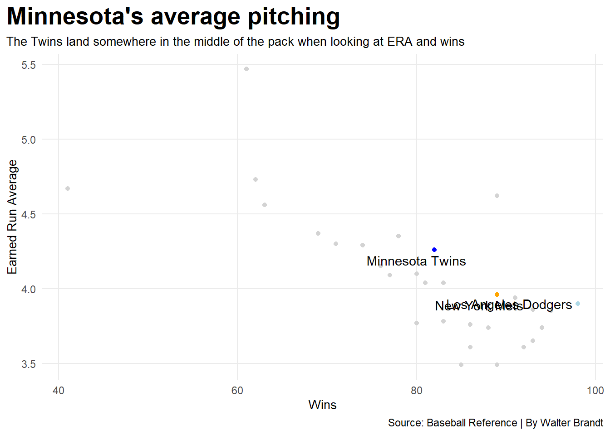
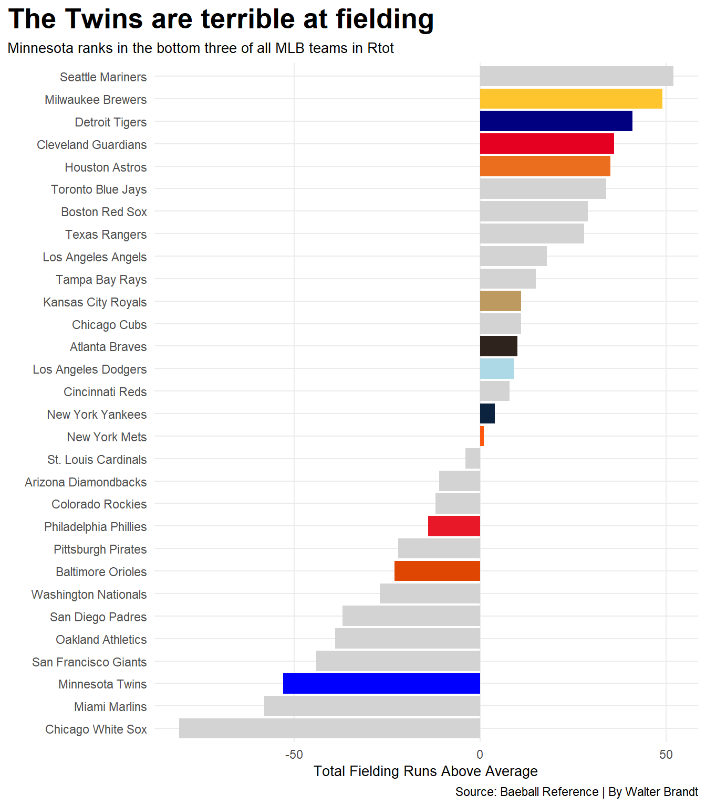

Code
library(tidyverse)
library(ggalt)
library(ggtext)
library(gt)
library(ggrepel)Walter Brandt
April 14, 2025
The Minnesota Twins have been a pretty mediocre team the past few years, only making the postseason twice in the past five years. The Twins always seem to have a decent team each year but as fans know, they struggle to get over the hump and compete with the top teams in the league.
teamstats25 <- read_csv("mlbteam25.csv")
twins25 <- teamstats25 |>
filter(Tm == "Minnesota Twins")
mets25 <- teamstats25 |>
filter(Tm == "New York Mets")
dodgers25 <- teamstats25 |>
filter(Tm == "Los Angeles Dodgers")
ggplot() +
geom_point(data=teamstats25, aes(x=W, y=ERA), color="lightgrey") +
geom_point(data=twins25, aes(x=W, y=ERA), color="blue") +
geom_point(data=mets25, aes(x=W, y=ERA), color="orange") +
geom_point(data=dodgers25, aes(x=W, y=ERA), color="lightblue") +
geom_text_repel(
data=twins25,
aes(x=W, y=ERA, label=Tm)
) +
geom_text_repel(
data=mets25,
aes(x=W, y=ERA, label=Tm)
) +
geom_text_repel(
data=dodgers25,
aes(x=W, y=ERA, label=Tm)
) +
labs(
x="Wins",
y="Earned Run Average",
title="The Twins are keeping up with the rest of the league in pitching this season",
subtitle="Through the first few weeks of the season the twins have been kepping a sub-four ERA",
caption="Source: Baseball Reference | By Walter Brandt"
) +
theme_minimal() +
theme(
plot.title = element_text(size = 20, face = "bold"),
axis.title = element_text(size = 10),
plot.subtitle = element_text(size=10),
panel.grid.minor = element_blank(),
plot.title.position = "plot"
) The Twins are keeping up with the top teams in terms of earned run average. But where they are not keeping up is wins in 2025. If the Twins pitching staff can keep a sub three earned run average you can expect them to move up in terms of wins throughout the 2025 season.
pitching24 <- read_csv("teamstats24.csv")
twins24 <- pitching24 |>
filter(Tm == "Minnesota Twins")
mets24 <- pitching24 |>
filter(Tm == "New York Mets")
dodgers24 <- pitching24 |>
filter(Tm == "Los Angeles Dodgers")
ggplot() +
geom_point(data=pitching24, aes(x=W, y=ERA), color="lightgrey") +
geom_point(data=twins24, aes(x=W, y=ERA), color="blue") +
geom_point(data=mets24, aes(x=W, y=ERA), color="orange") +
geom_point(data=dodgers24, aes(x=W, y=ERA), color="lightblue") +
geom_text_repel(
data=twins24,
aes(x=W, y=ERA, label=Tm)
) +
geom_text_repel(
data=mets24,
aes(x=W, y=ERA, label=Tm)
) +
geom_text_repel(
data=dodgers24,
aes(x=W, y=ERA, label=Tm)
) +
labs(
x="Wins",
y="Earned Run Average",
title="Minnesota's average pitching",
subtitle="The Twins land somewhere in the middle of the pack when looking ar ERA and wins",
caption="Source: Baseball Reference | By Walter Brandt"
) +
theme_minimal() +
theme(
plot.title = element_text(size = 20, face = "bold"),
axis.title = element_text(size = 10),
plot.subtitle = element_text(size=10),
panel.grid.minor = element_blank(),
plot.title.position = "plot"
) 
Looking at the Twins pitching in 2024, they have a sub five earned run average, which puts them in the bottom half of the league in terms of earned runs. It’s pretty obvious that this level of pitching does not result in a team that can go deep into the playoffs. Or even make the playoffs at all.
fielding24 <- read_csv("fielding24.csv")
mnfielding <- fielding24 |>
filter(Tm == "Minnesota Twins")
cwsfielding <- fielding24 |>
filter(Tm == "Chicago Whitesox")
ladfielding <- fielding24 |>
filter(Tm == "Los Angeles Dodgers")
detfielding <- fielding24 |>
filter(Tm== "Detroit Tigers")
houfielding <- fielding24 |>
filter(Tm== "Houston Astros")
clefielding <- fielding24 |>
filter(Tm== "Cleveland Guardians")
kcfielding <- fielding24 |>
filter(Tm== "Kansas City Royals")
balfielding <- fielding24 |>
filter(Tm== "Baltimore Orioles")
nyyfielding <- fielding24 |>
filter(Tm== "New York Yankees")
nymfielding <- fielding24 |>
filter(Tm== "New York Mets")
milfielding <- fielding24 |>
filter(Tm== "Milwaukee Brewers")
phifielding <- fielding24 |>
filter(Tm== "Philadelphia Phillies")
atlfielding <- fielding24 |>
filter(Tm== "Atlanta Braves")
sdfielding <- fielding24 |>
filter(Tm== "San Diego Padres")
ggplot() +
geom_bar(data=fielding24, aes(x=reorder(Tm, Rtot), weight=Rtot), fill="lightgrey") +
geom_bar(data=mnfielding, aes(x=reorder(Tm, Rtot), weight=Rtot), fill="blue") +
geom_bar(data=cwsfielding, aes(x=reorder(Tm, Rtot), weight=Rtot), fill="black") +
geom_bar(data=ladfielding, aes(x=reorder(Tm, Rtot), weight=Rtot), fill="lightblue") +
geom_bar(data=detfielding, aes(x=reorder(Tm, Rtot), weight=Rtot), fill="navy") +
geom_bar(data=houfielding, aes(x=reorder(Tm, Rtot), weight=Rtot), fill="#EB6E1F") +
geom_bar(data=clefielding, aes(x=reorder(Tm, Rtot), weight=Rtot), fill="#E50022") +
geom_bar(data=kcfielding, aes(x=reorder(Tm, Rtot), weight=Rtot), fill="#BD9B60") +
geom_bar(data=balfielding, aes(x=reorder(Tm, Rtot), weight=Rtot), fill="#DF4601") +
geom_bar(data=nyyfielding, aes(x=reorder(Tm, Rtot), weight=Rtot), fill="#0C2340") +
geom_bar(data=nymfielding, aes(x=reorder(Tm, Rtot), weight=Rtot), fill="#FF5910") +
geom_bar(data=milfielding, aes(x=reorder(Tm, Rtot), weight=Rtot), fill="#FFC52F") +
geom_bar(data=phifielding, aes(x=reorder(Tm, Rtot), weight=Rtot), fill="#E81828") +
geom_bar(data=atlfielding, aes(x=reorder(Tm, Rtot), weight=Rtot), fill="#CE1141") +
geom_bar(data=atlfielding, aes(x=reorder(Tm, Rtot), weight=Rtot), fill="#2F241D") +
coord_flip() +
labs(
x="",
y="Total Fielding Runs Above Average",
title="The Twins are terrible at fielding",
subtitle="Minnesota ranks in the bottom three of all MLB teams in Rtot",
caption="Source: Baeball Reference | By Walter Brandt"
) +
theme_minimal() +
theme(
plot.title = element_text(size = 20, face = "bold"),
axis.title = element_text(size = 10),
plot.subtitle = element_text(size=10),
panel.grid.minor = element_blank(),
plot.title.position = "plot"
) 
Where else do the Twins struggle? Looking at a stat called Rtot, which basically means how good they are at stopping the ball on defense. The Twins were quite abysmal in this category in 2024 being third to last only to the Marlins and White Sox, who barely combined for 100 wins total last year.
twinsbatting25 <- read_csv("2025twinsbat.csv")
twinsbatting25 |>
select(Player, H, RBI) |>
gt() |>
cols_label(
Player = "Player",
H = "Hits",
RBI = "Runs Batted In"
) |>
tab_header(
title = "The Importance of Byron Buxton",
subtitle = "If Buxton can stay healthy he can really help the Twins in 2025"
) |> tab_style(
style = cell_text(color = "black", weight = "bold", align = "left"),
locations = cells_title("title")
) |> tab_style(
style = cell_text(color = "black", align = "left"),
locations = cells_title("subtitle")
) |>
tab_source_note(
source_note = md("By: Walter Brandt | Source: Baseball Reference")
) |>
tab_style(
locations = cells_column_labels(columns = everything()),
style = list(
cell_borders(sides = "bottom", weight = px(3)),
cell_text(weight = "bold", size=12)
)
) |>
opt_row_striping() |>
opt_table_lines("none") |>
tab_style(
style = list(
cell_fill(color = "red"),
cell_text(color = "white")
),
locations = cells_body(
rows = Player == "Byron Buxton")
)| The Importance of Byron Buxton | ||
|---|---|---|
| If Buxton can stay healthy he can really help the Twins in 2025 | ||
| Player | Hits | Runs Batted In |
| Ryan Jeffers | 23 | 11 |
| Ty France | 32 | 19 |
| Edouard Julien* | 18 | 8 |
| Carlos Correa | 25 | 9 |
| Brooks Lee# | 15 | 5 |
| Harrison Bader | 25 | 13 |
| Byron Buxton | 32 | 17 |
| Matt Wallner* | 15 | 3 |
| Trevor Larnach* | 27 | 15 |
| Willi Castro# | 15 | 5 |
| Christian Vázquez | 8 | 2 |
| Mickey Gasper# | 6 | 3 |
| José Miranda | 6 | 5 |
| DaShawn Keirsey Jr.* | 2 | 0 |
| Luke Keaschall | 7 | 2 |
| Jonah Bride | 7 | 3 |
| Kody Clemens* | 2 | 2 |
| Jhoan Durán | 0 | 0 |
| Team Totals | 265 | 122 |
| By: Walter Brandt | Source: Baseball Reference | ||
At this point, Twins fans expect Byron Buxton to never finish an entire season due to him getting injured seemingly every year since he put on a Twins jersey. But what happens when he is in the lineup? As we can see, Byron Buxton leads the Twins in hits(tied with Ty France) and is also second in runs batted in. If he can just stay healthy Buxton will be a crucial assest to the Minnesota Twins. His batting and fielding ability is that of an elite player when he is healthy.
All in all, the Minnesota Twins are decent and not much more than that. This is due to subpar fielding, mediocre pitching and injuries. The Twins could be shaping up to have a great 2025, as they been heating up the past few weeks after a slow start to the season. If the Twins can maintain a sub-three earned run average, keep Buxton healthy and get better at fielding they should make a postseason apperance in 2025.